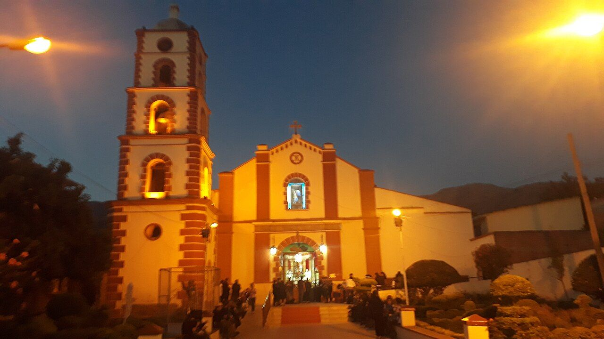

Una organización nacida en el valle
SEMCA — Semillas del Cambio tiene su sede en Tiquipaya, en el departamento de Cochabamba. Nació del trabajo conjunto de vecinas, vecinos y docentes que querían que las niñas y los niños del valle tuvieran las mismas oportunidades que cualquier otro.
Misión y visión
Nuestra misión
Acompañar a niñas, niños y familias de Tiquipaya y del valle de Cochabamba en los primeros años de vida —el cuidado de su salud, su alimentación y su desarrollo— con programas construidos junto a la comunidad y sostenidos en el tiempo.
Nuestra visión
Un valle donde ninguna niña o niño crezca sin atención, sin alimentación ni protección; donde las familias encuentren apoyo desde el primer día, y donde las decisiones sobre el territorio se tomen con la gente que lo habita.
No llegamos a traer respuestas. Llegamos a sembrar preguntas y a quedarnos a ver qué crece.
Cómo trabajamos
Cuatro principios que aplicamos a cada programa, incluso cuando nos obligan a ir más despacio.
- Escuchar antes de proponer. Todo programa empieza con una asamblea con la comunidad. Si la propuesta no sale de ahí, no se hace.
- Trabajar con las instituciones locales, no por encima de ellas. El municipio, el centro de salud y las escuelas ya están en el territorio. Nos sumamos a lo que hacen.
- Sostener en el tiempo. Preferimos pocos programas que duren años a muchos que duren meses.
- Rendir cuentas. Información clara sobre qué se hace y con qué recursos. Publicamos nuestros datos de registro y respondemos las preguntas incómodas.
Nuestros espacios
Todo ocurre en la zona de Chilimarca, en Tiquipaya: un mismo terreno donde conviven la escuela, el centro infantil y el huerto.


-
Escuela
Unidad Educativa «Para la Vida»
Nuestra unidad educativa privada, con educación inicial y primaria. Hoy acompaña a 98 estudiantes. Código RUE 60900057.
-
Primera infancia
Centro infantil y estimulación temprana
Espacios de juego y estimulación para las y los más pequeños, en articulación con el municipio y la red de centros infantiles de Tiquipaya.
-
Huerto
Huerto y cocina
Las niñas y niños siembran, cosechan y cocinan con productos de la zona. El huerto es aula, despensa y excusa para aprender a comer bien.
Con quién trabajamos
Ningún programa se sostiene en solitario. Estas son las instituciones con las que coordinamos.
-
Municipio
Gobierno Autónomo Municipal de Tiquipaya
Articulación con el área de primera infancia y participación en las actividades deportivas y de prevención que organiza el municipio.
-
Salud
Red pública de salud
Coordinación del calendario de controles, vacunación y consejería con el centro de salud de la zona.
-
Educación
Comunidad educativa y centros infantiles
Trabajo conjunto con las familias, las maestras y los centros infantiles de la zona de Chilimarca.
Datos legales
SEMCA figura en el Registro Único Nacional de ONG del Estado Plurinacional de Bolivia, con ámbito de trabajo en el departamento de Cochabamba.
Conocer el trabajo por dentro
Escríbenos o pasa por nuestras actividades. Siempre hay lugar para una mano más.